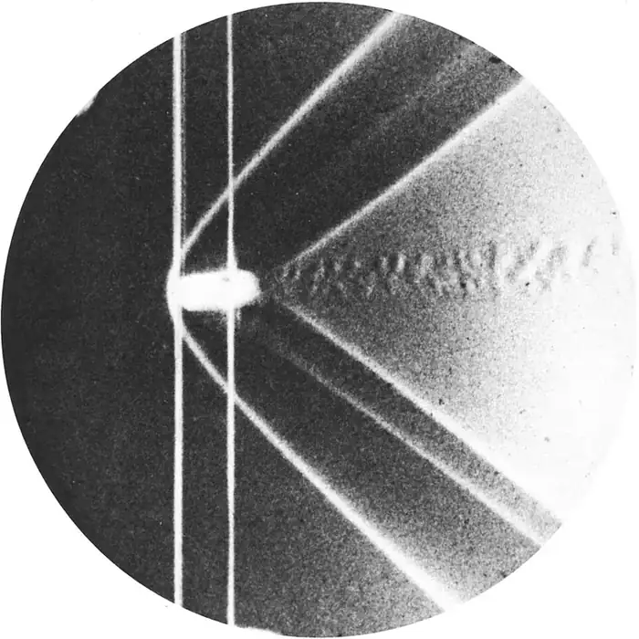

The method
Firearms examiners compare striations and breech marks on recovered bullets and casings with test firings from a suspect weapon, and testify that they came from the same gun.
Maps, diagrams and images


The problems
Studies of examiner accuracy have found error rates that are low but not zero, and the 2009 National Academy report criticised the lack of statistical foundations and the practice of testifying to a 'match' without an error rate. The method remains widely used.
Where it stands
Documented: the method.
Documented: examiner studies.
Not established: a statistical foundation.
The honest label: live debate.
Why it is in the archive
Because 'the gun that fired the bullet' is a strong claim resting on visual comparison.
Open resources on this topic
- PapersOpen-access articles: DOAJ · PubMed Central · Internet Archive Scholar
- BooksPublic-domain and borrowable copies: Open Library · Project Gutenberg · Google Books · Internet Archive
Cite this page
APA
Momin, S. (2026). Ballistics Matching. The Larger World Archive. https://drsamonline.github.io/LARGE_GLOBE/ballistics-matching.htmlMLA
Momin, Sohil. “Ballistics Matching.” The Larger World Archive, 2026, https://drsamonline.github.io/LARGE_GLOBE/ballistics-matching.html.Chicago
Momin, Sohil. “Ballistics Matching.” The Larger World Archive, 2026. https://drsamonline.github.io/LARGE_GLOBE/ballistics-matching.html.BibTeX
@misc{ballistics2026ballistics,
author = {Momin, Sohil},
title = {Ballistics Matching},
year = {2026},
howpublished = {The Larger World Archive},
url = {https://drsamonline.github.io/LARGE_GLOBE/ballistics-matching.html},
note = {Last reviewed 20 November 2026}
}Last reviewed 20 November 2026 · Corrections policy · this page is not peer reviewed
Sources for this page
- Wikipedia, “Forensic firearm examination” — the methoden.wikipedia.org
- Wikipedia, “Ballistics” — the scienceen.wikipedia.org
- Wikipedia, “Comparison microscope” — the instrumenten.wikipedia.org
- Wikipedia, “Forensic science” — the fielden.wikipedia.org